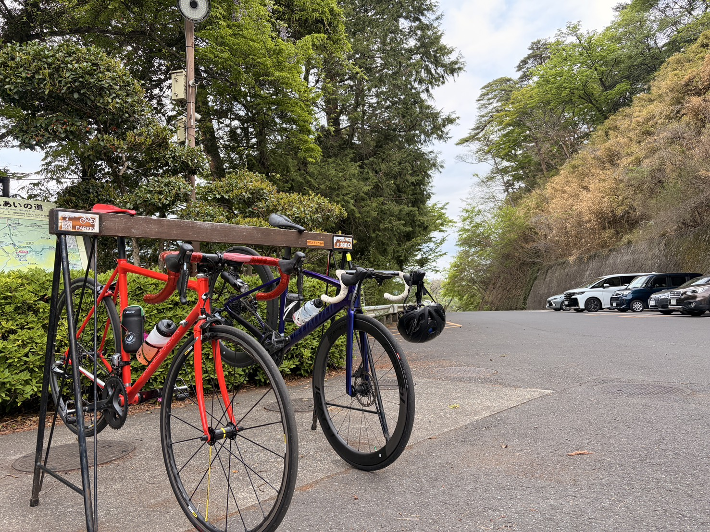
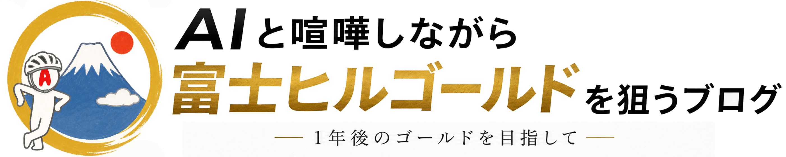
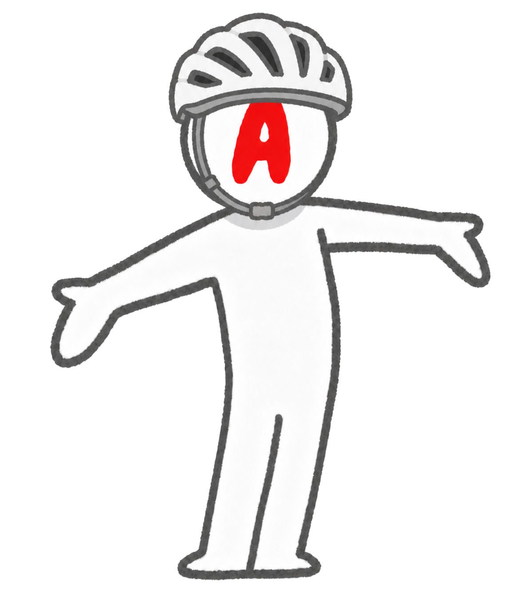
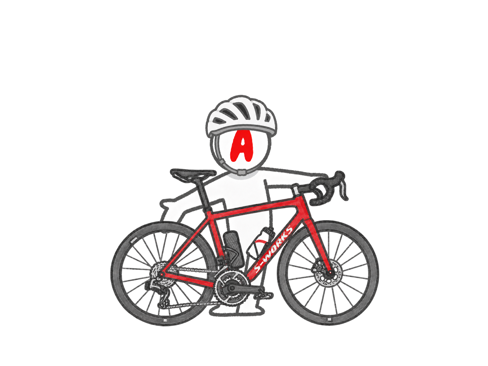
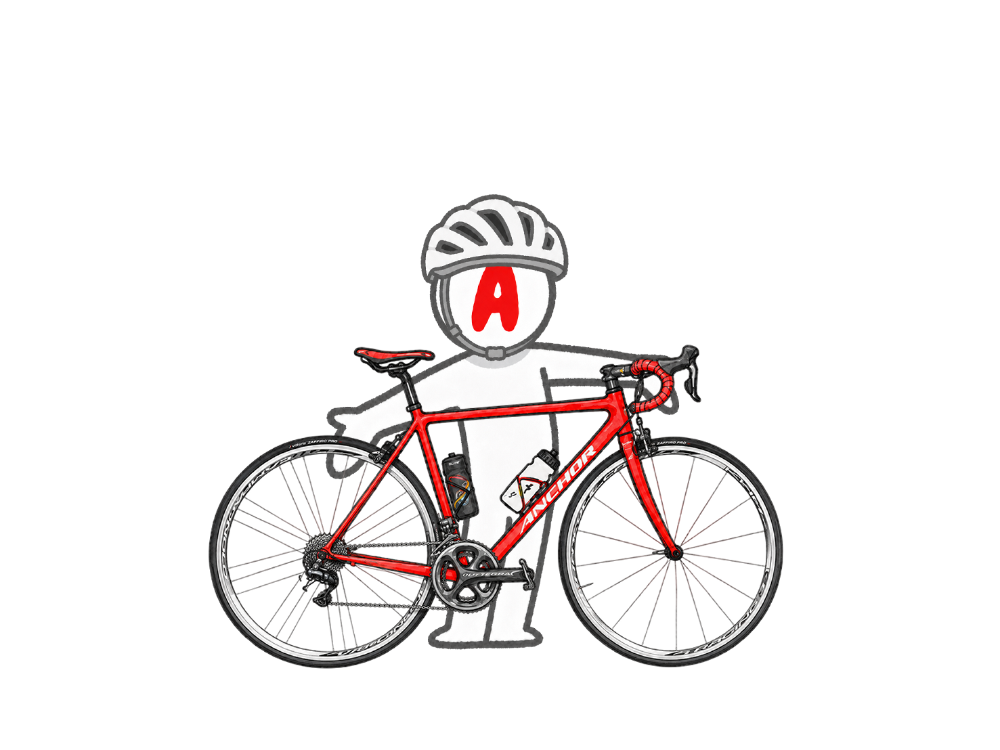
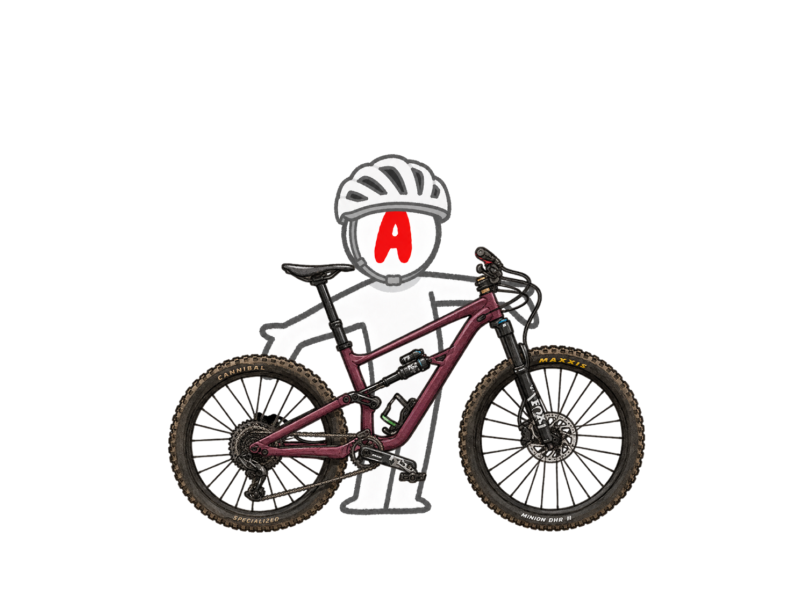
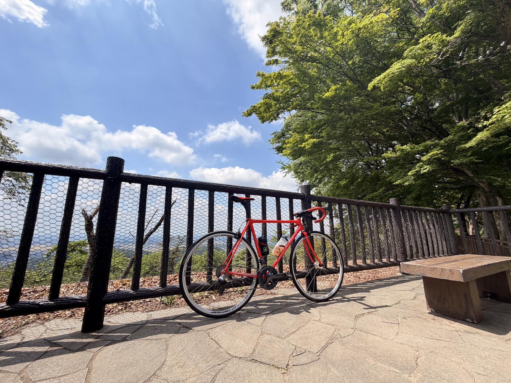

唐沢山（栃木県佐野市）
家から一番近いので重宝している山。少し距離が・・・とも思うが近くに山があるので文句はいえない。 管理猫が居て触らせてくれるのでたまに癒されてる。 140mupくらい。

AIと相談しながら、でも言いなりにはならず、富士ヒルゴールドを（一応）狙うサイクリスト。 普段は家に居て外に行くときは自転車で走るくらいなので、引きこもりと言えば引きこもりなのかもしれない。

ロードバイクとMTBが好き。効率厨なので最適化とか改善とかも好き。あとスーパーの割引されている商品も好き。なんかお得な気がするから（お得だとは言っていない）
一応フリーランスで在宅で働いてます。こんなＨＰ作成したりＹｏｕＴｕｂｅやったり、ＡＩ導入サポートしたりとネットのお仕事してます。「仕事なにしてるんですか？」と聞かれるといつもどう答えていいか悩むのが最近の悩み。
ロードバイク2台とマウンテンバイク1台。ロードは2台とも赤。 だって赤カッコいいじゃん！

車体と財布が軽くなるバイク。 はじめからフル装備なのでアプデする 部分がない（選択肢がない）バイク。 6.6kg。

余ったdi2やカーボンハンドルを付けたオーバースペックバイク。ホイールはカンパのカムシンを装備したのでＧ3の良さに気が付いた。Ｇ3オシャだよね。9.2kg。

マウンテンバイクはこだわりがないので、これで満足。ホイールベースが長いので乗り換えた際に前転しにくいように感じた。重量は不明だけど前のカーボンＭＴＢから比べると、とても重い。
練習でよく登る山。栃木は山ばかりだけど自転車乗りにはいい環境。欲を言えば長いのぼりが欲しいけど都会に住んでいる人から「贅沢いうな！」と言われそう。

家から一番近いので重宝している山。少し距離が・・・とも思うが近くに山があるので文句はいえない。 管理猫が居て触らせてくれるのでたまに癒されてる。 140mupくらい。

太いと書いておおひらと読む山。いつものコースはラストに斜板があるので根性！RNC7で行くと重いのでいいトレーニングになる。
頂上に団子とか卵焼きが売っているが、いつも横目で見て通り過ぎている。
120mupくらい。

序盤が斜度ゆるいので前半飛ばせる。個人的に一番好きだけど、最近土砂崩れとかで通行止めになりがち。後半に行くにつれキツクなるため、初め調子に乗っていると後半かなりしんどい。ゴール前にゴールの雰囲気を出している偽ゴールがある。
160upくらい。